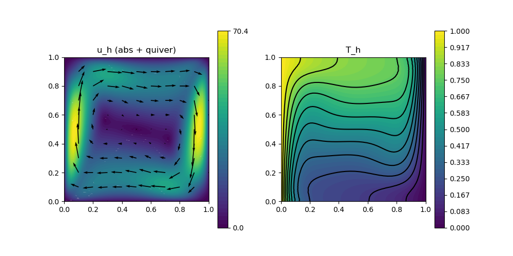

236 : Natural Convection Square 2D
This example solves the natural convection (or Boussinesque) problem on a square domain $\Omega = (0,1)^2$. Altogether, we are looking for a velocity $\mathbf{u}$, a pressure $\mathbf{p}$ and a stemperature $T$ such that
\[\begin{aligned} - \Delta \mathbf{u} + (\mathbf{u} \cdot \nabla) \mathbf{u} + \nabla p & = Ra \mathbf{e}_2 T\\ \mathrm{div}(u) & = 0\\ - \Delta \mathbf{T} + \mathbf{u} \cdot \nabla \mathbf{T} & = 0 \end{aligned}\]
with some parameter $Ra$. The velocity has zero Dirichlet boundary conditions, while the temperature is fixed at constant values on the left and right boundary, the remaining boundary is do-nothing.
Two possible solution strategies are implemented here. The first is Newton's method. For this both nonlinear operators are assigned as auto-differentiated operators. Note, that the nonlinearity in the tmeperature equation involves both unknowns u and T and hence leads to two assigned matrix blocks in the equation for T. However, a direct Newton solve only works smooth for small or moderate $Ra$ (circa up to 1e5).
Therefore, for larger $Ra$, Anderson acceleration can be used which is triggered by setting anderson = true
Also, note that a divergence-free reconstruction operator is used for the velocity, which also helps with the convergence and accuracy of the lowest-order method for this test problem.
module Example236_NaturalConvectionSquare2D
using GradientRobustMultiPhysics
using ExtendableGrids
using GridVisualize
# boundary data for temperature on bottom
T_left = DataFunction([1])
T_right = DataFunction([0])
# everything is wrapped in a main function
function main(; verbosity = 0, Plotter = nothing, Ra = 1e5, μ = 1, nrefinements = 5, reconstruct = true, anderson = false)
# set log level
set_verbosity(verbosity)
# load mesh and refine
xgrid = grid_unitsquare(Triangle2D)
xgrid = uniform_refine(xgrid, nrefinements)
# types for discretisation by Bernardi--Raugel pressure-robust (BDM1 reconstruction) + P1-FEM for temperature
FETypes = [H1BR{2}, H1P0{1}, H1P1{1}];
RIdentity = reconstruct ? ReconstructionIdentity{HDIVBDM1{2}} : Identity
# load Stokes prototype and add a unknown for the temperature
Problem = IncompressibleNavierStokesProblem(2; viscosity = μ, nonlinear = false, store = true)
add_unknown!(Problem; unknown_name = "T", equation_name = "temperature equation")
Problem.name = "natural convection problem"
# add convection term for velocity
add_operator!(Problem, [1,1], ConvectionOperator(1, RIdentity, 2, 2; test_operator = RIdentity, newton = !anderson))
# add boundary data for velocity (unknown 1) and temperature (unknown 3)
add_boundarydata!(Problem, 1, [1,2,3,4], HomogeneousDirichletBoundary)
add_boundarydata!(Problem, 3, [4], InterpolateDirichletBoundary; data = T_left)
add_boundarydata!(Problem, 3, [2], InterpolateDirichletBoundary; data = T_right)
# add Laplacian to temperature equation
add_operator!(Problem,[3,3], LaplaceOperator(1.0; store = true, name = "∇(T)⋅∇(V)"))
# add coupling terms for velocity and temperature (convection + gravity)
if anderson
add_operator!(Problem,[3,3], ConvectionOperator(1, RIdentity, 2, 1; name = "(R(u)⋅∇(T)) V"))
else #if newton
function Tconvection_kernel(result, input)
# input = [id(u),∇T]
result[1] = input[1]*input[3] + input[2]*input[4]
return nothing
end
function Tconvection_jacobian(jac, input)
jac[1,1] = input[3]
jac[1,3] = input[1]
jac[1,2] = input[4]
jac[1,4] = input[2]
return nothing
end
add_operator!(Problem,3, NonlinearForm(Identity, [RIdentity,Gradient], [1,3], Tconvection_kernel, [1,4]; name = "(R(u)⋅∇(T)) V", jacobian = Tconvection_jacobian, newton = true))
end
vdotg_action = Action((result, input) -> (result[1] = -input[2]), [1 2]; name = "v⋅g")
add_operator!(Problem,[1,3], BilinearForm([RIdentity, Identity], vdotg_action; factor = Ra, name = "-Ra v⋅g T", store = true))
# show final problem description
@show Problem
# construct FESpaces and Solution veector
FES = [FESpace{FETypes[1]}(xgrid), FESpace{FETypes[2]}(xgrid), FESpace{FETypes[3]}(xgrid)]
Solution = FEVector(["v_h", "p_h", "T_h"],FES)
# solve (fixedpoint iteration by solving consecutively equations [3] and [1,2] + Anderson acceleration)
if anderson
solve!(Solution, Problem; subiterations = [[3],[1,2]], maxiterations = 100, target_residual = 1e-8, anderson_iterations = 20, anderson_metric = "l2", anderson_unknowns = [1], anderson_damping = 0.90, show_solver_config = true, show_statistics = true)
else
solve!(Solution, Problem; maxiterations = 100, target_residual = 1e2, damping = 0.55, show_solver_config = true, show_statistics = true)
solve!(Solution, Problem; maxiterations = 100, target_residual = 1e-8, damping = 0, show_solver_config = false, show_statistics = true)
end
# plot
p = GridVisualizer(; Plotter = Plotter, layout = (1,2), clear = true, resolution = (1000,500))
scalarplot!(p[1,1],xgrid,view(nodevalues(Solution[1]; abs = true),1,:), levels = 0)
vectorplot!(p[1,1],xgrid,evaluate(PointEvaluator(Solution[1], Identity)), spacing = 0.1, clear = false, title = "u_h (abs + quiver)")
scalarplot!(p[1,2],xgrid,view(nodevalues(Solution[3]),1,:), levels = 11, title = "T_h")
end
endThis page was generated using Literate.jl.
Default output:
julia> Example236_NaturalConvectionSquare2D.main()
Explored path: SparsityDetection.Path(Bool[], 1)
Explored path: SparsityDetection.Path(Bool[], 1)
Problem =
PDE-DESCRIPTION
===============
system name = natural convection problem
id | unknown name / equation name
[1] | u / momentum equation
[2] | p / incompressibility constraint
[3] | T / temperature equation
LHS block | PDEOperator(s)
[1,1] | (∇u,∇v) (APT = SymmetricBilinearForm, AT = ON_CELLS, regions = [0])
| ((R(u) ⋅ ∇) u, R(v)) [Newton] [∂u] (APT = NonlinearForm, AT = ON_CELLS, regions = [0])
[1,2] | (div(v),q) (APT = BilinearForm, AT = ON_CELLS, regions = [0])
[1,3] | -Ra v⋅g T (APT = BilinearForm, AT = ON_CELLS, regions = [0])
[2,1] | none
[2,2] | none
[2,3] | none
[3,1] | (R(u)⋅∇(T)) V [Newton] [∂u] (APT = NonlinearForm, AT = ON_CELLS, regions = [0])
[3,2] | none
[3,3] | ∇(T)⋅∇(V) (APT = SymmetricBilinearForm, AT = ON_CELLS, regions = [0])
| (R(u)⋅∇(T)) V [Newton] [∂T] (APT = NonlinearForm, AT = ON_CELLS, regions = [0])
RHS block | PDEOperator(s)
[1] | none
[2] | none
[3] | none
BoundaryOperator[1] : HomogeneousDirichletBoundary -> [1, 2, 3, 4]
BoundaryOperator[2] :
BoundaryOperator[3] : InterpolateDirichletBoundary -> [4, 2]
GlobalConstraints[1] : Mean[2] != 0
SC =
SOLVER-CONFIGURATION
======================
overall nonlinear = true
overall timedependent = false
anderson_iterations = 0
subiterations = UnitRange{Int64}[1:3]
show_iteration_details = true
timedependent_equations = Any[]
anderson_unknowns = [1]
show_statistics = true
anderson_metric = l2
skip_update = [1]
linsolver = GradientRobustMultiPhysics.LinearSystem{Float64, Int64, LUFactorization}
damping = 0.55
time = 0
parallel_storage = false
show_solver_config = true
anderson_damping = 1
check_nonlinear_residual = true
fixed_penalty = 1.0e60
target_residual = 100.0
maxiterations = 100
AssemblyTriggers =
LHS_AT[1] : A I I
LHS_AT[2] : N N N
LHS_AT[3] : A N A
RHS_AT[1] : N
RHS_AT[2] : N
RHS_AT[3] : N
(I = Once, T = EachTimeStep/SubIteration, A = Always, N = Never)
LHS_dependencies = [[1] [1, 2] [1, 3]; [2, 1] [2] [2, 3]; [3, 1] [3, 2] [3, 1]]
ITERATION | LSRESIDUAL | NLRESIDUAL | TIME ASSEMBLY/SOLVE/TOTAL (s)
-----------------------------------------------------------------------
init | | 4.76e+00/4.40e-06/4.76e+00
1 | 1.178005e-11 | 1.710197e+03 | 9.45e-01/2.56e-01/1.21e+00
2 | 8.791455e-12 | 1.029414e+03 | 9.14e-01/2.73e-01/1.19e+00
3 | 8.423852e-12 | 6.245192e+02 | 9.55e-01/2.01e-01/1.16e+00
4 | 8.111620e-12 | 3.852044e+02 | 9.58e-01/1.96e-01/1.16e+00
5 | 8.234635e-12 | 2.482485e+02 | 9.60e-01/1.95e-01/1.16e+00
6 | 8.017012e-12 | 1.980286e+02 | 9.33e-01/2.24e-01/1.16e+00
7 | 7.613980e-12 | 1.111594e+02 | 1.05e+00/1.99e-01/1.25e+00
8 | 7.683898e-12 | 6.100656e+01 | 1.55e+00/1.98e-01/1.75e+00
total | | 1.30e+01/1.74e+00/1.48e+01
ITERATION | LSRESIDUAL | NLRESIDUAL | TIME ASSEMBLY/SOLVE/TOTAL (s)
-----------------------------------------------------------------------
init | | 1.32e+00/5.10e-06/1.33e+00
1 | 3.947678e-12 | 3.366297e+00 | 9.41e-01/2.50e-01/1.20e+00
2 | 3.970969e-12 | 6.899417e-03 | 9.54e-01/1.91e-01/1.15e+00
3 | 4.000557e-12 | 4.473131e-07 | 9.11e-01/1.91e-01/1.10e+00
4 | 4.024171e-12 | 4.117353e-12 | 9.24e-01/2.31e-01/1.16e+00
total | | 5.05e+00/8.63e-01/5.93e+00
